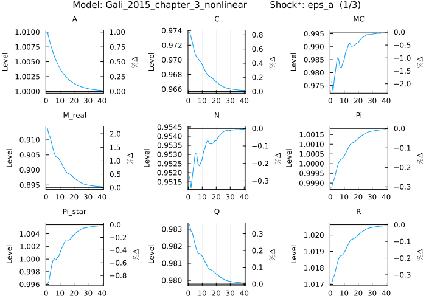
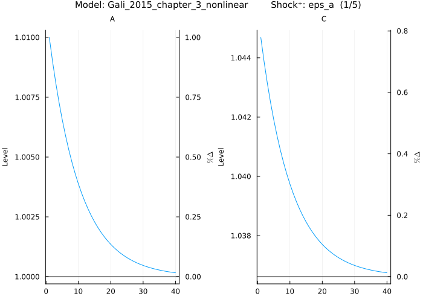

Impulse Response Functions (IRF)
Calling plot_irf computes IRFs for every exogenous shock and every endogenous variable by default, using the model's default solution method (first-order perturbation) and a one-standard-deviation positive shock.
First, define and load a model:
@model Gali_2015_chapter_3_nonlinear begin
W_real[0] = C[0] ^ σ * N[0] ^ φ
Q[0] = β * (C[1] / C[0]) ^ (-σ) * Z[1] / Z[0] / Pi[1]
R[0] = 1 / Q[0]
Y[0] = A[0] * (N[0] / S[0]) ^ (1 - α)
R[0] = Pi[1] * realinterest[0]
R[0] = 1 / β * Pi[0] ^ ϕᵖⁱ * (Y[0] / Y[ss]) ^ ϕʸ * exp(nu[0])
C[0] = Y[0]
log(A[0]) = ρ_a * log(A[-1]) + std_a * eps_a[x]
log(Z[0]) = ρ_z * log(Z[-1]) - std_z * eps_z[x]
nu[0] = ρ_ν * nu[-1] + std_nu * eps_nu[x]
MC[0] = W_real[0] / (S[0] * Y[0] * (1 - α) / N[0])
1 = θ * Pi[0] ^ (ϵ - 1) + (1 - θ) * Pi_star[0] ^ (1 - ϵ)
S[0] = (1 - θ) * Pi_star[0] ^ (( - ϵ) / (1 - α)) + θ * Pi[0] ^ (ϵ / (1 - α)) * S[-1]
Pi_star[0] ^ (1 + ϵ * α / (1 - α)) = ϵ * x_aux_1[0] / x_aux_2[0] * (1 - τ) / (ϵ - 1)
x_aux_1[0] = MC[0] * Y[0] * Z[0] * C[0] ^ (-σ) + β * θ * Pi[1] ^ (ϵ + α * ϵ / (1 - α)) * x_aux_1[1]
x_aux_2[0] = Y[0] * Z[0] * C[0] ^ (-σ) + β * θ * Pi[1] ^ (ϵ - 1) * x_aux_2[1]
log_y[0] = log(Y[0])
log_W_real[0] = log(W_real[0])
log_N[0] = log(N[0])
pi_ann[0] = 4 * log(Pi[0])
i_ann[0] = 4 * log(R[0])
r_real_ann[0] = 4 * log(realinterest[0])
M_real[0] = Y[0] / R[0] ^ η
end
@parameters Gali_2015_chapter_3_nonlinear begin
σ = 1
φ = 5
ϕᵖⁱ = 1.5
ϕʸ = 0.125
θ = 0.75
ρ_ν = 0.5
ρ_z = 0.5
ρ_a = 0.9
β = 0.99
η = 3.77
α = 0.25
ϵ = 9
τ = 0
std_a = .01
std_z = .05
std_nu = .0025
endNow, plot the IRFs using the default settings:
plot_irf(Gali_2015_chapter_3_nonlinear)
The plots display every endogenous variable affected for each exogenous shock. Each page consists of multiple subplots, one per variable, and shows the response for a single shock at a time (mentioned in the title). The title includes the model name, shock identifier, sign of the impulse (positive by default), and the page indicator (e.g., (1/3)). Each subplot shows the steady state as a horizontal reference line (non-stochastic for first-order solutions, stochastic for higher orders). For strictly positive variables, a secondary axis displays percentage deviations.
Combine or compare IRFs with plot_irf!
The plot_irf! function (note the exclamation mark !) adds additional IRFs to an existing plot created with plot_irf, enabling direct comparison between different scenarios. Any input argument that affects the model's output (such as solution algorithm, parameter values, shocks, or initial states) can be varied to compare how these changes influence the impulse response functions. See the respective subsections below (e.g., Solution Algorithm, Parameter Values) for details on specific arguments.
When using plot_irf!, the new IRF can be either overlaid for comparison (default) or stacked to show cumulative effects, depending on the plot_type argument (see Plot Type).
Legend and table behavior:
- When inputs differ in one dimension (e.g., only the algorithm changes), the legend displays the value of that input dimension for each line (e.g.,
:first_order,:second_order). - When inputs differ in multiple dimensions (e.g., both algorithm and parameters change), the legend shows sequential numbers (1, 2, 3, ...) and references a table below the plot that details all input differences for each numbered scenario.
- A separate table below shows the relevant steady state values for each scenario to help identify differences across solution methods or parameter values.
Example with single input difference:
When only one input differs (e.g., the solution algorithm), the legend shows the algorithm names directly:
# Plot first-order solution
plot_irf(Gali_2015_chapter_3_nonlinear,
shocks = :eps_a)
# Add second-order solution to the same plot
plot_irf!(Gali_2015_chapter_3_nonlinear,
shocks = :eps_a,
algorithm = :second_order)
The legend will display :first_order and :second_order to identify each line.
The subplot y-axis labels change depending on the steady state values for each scenario. If the steady state values differ for a variable across scenarios, the y-axis label will indicate that the lines are in absolute deviations from the steady state. In that case no percent deviation is shown on the secondary y-axis, as the steady state values differ. In case the steady state values are the same across scenarios, the y-axis label indicates absolute levels on the primary y-axis and if the values are strictly positive the secondary y-axis shows the percent deviation scale.
Example with multiple input differences:
When multiple inputs differ (e.g., both algorithm and parameters), the legend shows sequential numbers and a table details the differences:
# Plot with baseline parameters
plot_irf(Gali_2015_chapter_3_nonlinear,
parameters = :β => 0.99,
shocks = :eps_a)
# Add with different algorithm AND parameters
plot_irf!(Gali_2015_chapter_3_nonlinear,
parameters = :β => 0.95,
shocks = :eps_a,
algorithm = :second_order)
The legend will show 1 and 2, with a table below the plot listing the parameter and algorithm values for each scenario.
Solution Algorithm
IRFs can be plotted using different solution algorithms. The following example uses a second-order perturbation solution:
plot_irf(Gali_2015_chapter_3_nonlinear,
shocks = :eps_a,
algorithm = :second_order)
The most notable difference is that at second order, dynamics are observed for S, which remains constant at first order (under certainty equivalence). Additionally, the steady state levels change because the stochastic steady state incorporates precautionary behavior (see horizontal lines).
plot_irf(Gali_2015_chapter_3_nonlinear,
shocks = :eps_a)
To compare the two solution methods side by side, use plot_irf! to add to an existing plot:
plot_irf(Gali_2015_chapter_3_nonlinear,
shocks = :eps_a)
plot_irf!(Gali_2015_chapter_3_nonlinear,
shocks = :eps_a,
algorithm = :second_order)
The plots now show both solution methods overlaid. The first-order solution is shown in blue, the second-order solution in red, as indicated in the legend below the plot. Note that the steady state levels can be different for the two solution methods. For variables where the relevant steady state is the same for both methods (e.g., A), the level appears on the left axis and percentage deviations on the right axis. For variables where the steady state differs between methods (e.g., C), only absolute level deviations (abs. Δ) appear on the left axis. The relevant steady state levels are shown in a table below the plot for reference (rounded to help identify differences).
Additional solution methods can be added to the same plot:
plot_irf!(Gali_2015_chapter_3_nonlinear,
shocks = :eps_a,
algorithm = :pruned_third_order)
Note that the pruned third-order solution incorporates time-varying risk and reverses the sign of the response for MC and N. The additional solution appears as another colored line with corresponding entries in both the legend and the steady state table below.
Initial State
The initial_state argument (default: [0.0], type: Union{Vector{Vector{Float64}},Vector{Float64}}) defines the starting point for the model. For pruned solution algorithms, the initial state can be provided as multiple state vectors (Vector{Vector{Float64}}). In this case, the initial state must be specified in deviations from the non-stochastic steady state. For all other cases, specify the initial state in levels. For pruned solution algorithms with a Vector{Float64} initial state, only the first-order initial state vector is affected. The state includes all variables as well as exogenous variables in leads or lags if present. get_irf(𝓂, shocks = :none, variables = :all, periods = 1) returns a KeyedArray with all variables. The KeyedArray type is provided by the AxisKeys package.
The initial state defines the starting point for the IRF and must contain all model variables, including any leads or lags. To obtain the correct ordering and number of variables, call get_irf(𝓂, shocks = :none, variables = :all, periods = 1), which returns a KeyedArray with all variables in the correct order. The KeyedArray type is provided by the AxisKeys package. For example:
init_state = get_irf(Gali_2015_chapter_3_nonlinear,
shocks = :none,
variables = :all,
periods = 1,
levels = true)Only state variables will have an impact on the IRF. To check which variables are state variables:
get_state_variables(Gali_2015_chapter_3_nonlinear)
# 4-element Vector{String}:
# "A"
# "S"
# "Z"
# "nu"Now modify the initial state and set nu to 0.1:
init_state(:nu,:,:) .= 0.1The modified initial state can now be input into the plot_irf function as a Vector:
plot_irf(Gali_2015_chapter_3_nonlinear,
shocks = :eps_a,
initial_state = vec(init_state))
Note that the example also defines the shock eps_a to show how the model reacts to a shock to A. For more details on the shocks argument see the corresponding section. This shows the difference in the IRF compared to starting from the non-stochastic steady state. Setting nu to a higher level effectively combines the effects of shocks to both nu and A. Since this uses a linear solution, these effects can be separated by stacking the components. Start with the IRF from the initial state as defined above:
plot_irf(Gali_2015_chapter_3_nonlinear,
shocks = :none,
initial_state = vec(init_state))
then stack the IRF from a shock to A on top of it:
plot_irf!(Gali_2015_chapter_3_nonlinear,
shocks = :eps_a,
plot_type = :stack)
The two components are shown with labels explained in the table below. The blue bars represent the first input (no shock, non-zero initial state), while the red bars correspond to the second input (starting from the steady state with an eps_a shock). Both components add up to the solid line that is the same as in the case of combining the eps_a shock with the initial state.
The same approach works for higher order solutions. Start with the second order solution. First, obtain the initial state in levels from the second order solution:
init_state_2nd = get_irf(Gali_2015_chapter_3_nonlinear,
shocks = :none,
variables = :all,
periods = 1,
levels = true,
algorithm = :second_order)Then set nu to 0.1:
init_state_2nd(:nu, :, :) .= 0.1and plot the IRF for eps_a starting from this initial state:
plot_irf(Gali_2015_chapter_3_nonlinear,
shocks = :eps_a,
initial_state = vec(init_state_2nd),
algorithm = :second_order)While these components can be stacked, they won't add up linearly due to the non-linear solution. Instead, the IRF behavior can be compared across the two solution methods:
plot_irf(Gali_2015_chapter_3_nonlinear,
shocks = :eps_a,
initial_state = vec(init_state))
plot_irf!(Gali_2015_chapter_3_nonlinear,
shocks = :eps_a,
initial_state = vec(init_state_2nd),
algorithm = :second_order)
The legend shows two lines, with their input differences detailed in the table below. The first line corresponds to the initial state used for the first order solution as well as the IRF using the first order solution and the second line corresponds to the initial state used for the second order solution and using the second order solution. Note that the steady states differ between the two solution methods, which also affects the initial states (except for nu, which is set to 0.1 in both cases). A second table below the first one shows the relevant steady states for both solution methods. Since the relevant steady state of A is the same for both methods, the corresponding subplot shows the level on the left axis and percentage deviations on the right axis. For all other variables, the relevant steady state differs between methods, so only absolute level deviations appear (abs. Δ) on the left axis, with steady states listed in the table at the bottom.
For pruned solution methods the initial state can also be given as multiple state vectors (Vector{Vector{Float64}}). When providing a vector of vectors, values must be specified as differences from the non-stochastic steady state. When providing only one vector, values must be in levels, with the initial state having its full nonlinear effect in the first period. Using a vector of vectors allows setting the pruned higher-order auxiliary state vectors. While this can be useful in some cases, note that these higher-order auxiliary state vectors have only a linear impact in the first period. Start by assembling the vector of vectors:
init_state_pruned_3rd_in_diff = get_irf(Gali_2015_chapter_3_nonlinear,
shocks = :none,
variables = :all,
periods = 1,
levels = true) - get_irf(Gali_2015_chapter_3_nonlinear,
shocks = :none,
variables = :all,
periods = 1,
algorithm = :pruned_third_order,
levels = true)
# 3-dimensional KeyedArray(NamedDimsArray(...)) with keys:
# ↓ Variables ∈ 23-element Vector{Symbol}
# → Periods ∈ 1-element UnitRange{Int64}
# ◪ Shocks ∈ 1-element Vector{Symbol}
# And data, 23×1×1 Array{Float64, 3}:
# [:, :, 1] ~ (:, :, :none):
# (1)
# (:A) 0.0
# (:C) 0.01899564383140051
# (:MC) 0.26061783703451824
# (:M_real) 0.014844948179111417
# (:N) 0.0256329467464953
# (:Pi) -0.0013592503942323475
# (:Pi_star) -0.0040777511826968205
# (:Q) -0.00023912532361458627
# (:R) 0.0002649588073291298
# (:S) 3.3306690738754696e-16
# (:W_real) 0.18508712654020898
# (:Y) 0.01899564383140051
# (:Z) 0.0
# (:i_ann) 0.0010068434678508487
# (:log_N) 0.024432922221986165
# (:log_W_real) 0.1404893027764202
# (:log_y) 0.018324691666489368
# (:nu) -1.3404049553225972e-17
# (:pi_ann) -0.005437001576929203
# (:r_real_ann) 0.008306969164175088
# (:realinterest) 0.002186044516888197
# (:x_aux_1) -0.7618262640813329
# (:x_aux_2) -0.371793344047362First- and third-order dynamics don't affect the steady state through risk, so they are zero. The second-order steady state includes the risk adjustment. Assemble the vectors for the third order case:
init_states_pruned_3rd_vec = [
zero(vec(init_state_pruned_3rd_in_diff)),
vec(init_state_pruned_3rd_in_diff),
zero(vec(init_state_pruned_3rd_in_diff)),
]Then set nu to 0.1 in the first order terms. Inspecting init_state_pruned_3rd_in_diff shows that nu is the 18th variable in the vector:
init_states_pruned_3rd_vec[1][18] = 0.1
plot_irf(Gali_2015_chapter_3_nonlinear,
shocks = :eps_a,
initial_state = init_states_pruned_3rd_vec,
algorithm = :pruned_third_order)
Alternatively, a simple vector can be used for the initial state. In this case the values must be in levels and the impact of the initial state is assumed to have the full nonlinear effect in the first period:
init_state_pruned_3rd = get_irf(Gali_2015_chapter_3_nonlinear,
shocks = :none,
variables = :all,
periods = 1,
levels = true,
algorithm = :pruned_third_order)
init_state_pruned_3rd(:nu, :, :) .= 0.1
plot_irf(Gali_2015_chapter_3_nonlinear,
shocks = :eps_a,
initial_state = vec(init_state_pruned_3rd),
algorithm = :pruned_third_order)Compare this with the second- and first-order versions, each starting from their respective steady states.
plot_irf!(Gali_2015_chapter_3_nonlinear,
shocks = :eps_a,
initial_state = vec(init_state_2nd),
algorithm = :second_order)
plot_irf!(Gali_2015_chapter_3_nonlinear,
shocks = :eps_a,
initial_state = vec(init_state))
This shows that the pruned third-order solution changes the dynamics while maintaining the same steady states as the second-order solution.
Shocks
The shocks argument (default: :all_excluding_obc) determines which IRFs to calculate. Shock names can be specified as either a Symbol or String (e.g., :y or "y"), or Tuple, Matrix or Vector of String or Symbol. :simulate triggers random draws of all shocks (excluding those related to occasionally binding constraints). :all_excluding_obc includes all shocks except OBC-related ones. :all also includes the OBC related shocks. A series of shocks can be passed using either a Matrix{Float64} or a KeyedArray{Float64}, with shocks (Symbol or String) in rows and periods in columns. The KeyedArray type is provided by the AxisKeys package. The simulation length equals the input length in the period dimension plus the number of periods specified in the periods argument. When using a KeyedArray{Float64}, ensure that rows are named with valid shock names of type Symbol or String. Any shocks not part of the model will trigger a warning. :none in combination with an initial_state can be used for deterministic simulations.
Individual shocks can be called by name:
plot_irf(Gali_2015_chapter_3_nonlinear,
shocks = :eps_a)
The same works if the shock name is input as a String:
plot_irf(Gali_2015_chapter_3_nonlinear,
shocks = "eps_a")or multiple shocks at once (as String or Symbol):
plot_irf(Gali_2015_chapter_3_nonlinear,
shocks = [:eps_a, :eps_z])

Multiple shocks can also be input as a Tuple:
plot_irf(Gali_2015_chapter_3_nonlinear,
shocks = (:eps_a, :eps_z))or a Matrix:
plot_irf(Gali_2015_chapter_3_nonlinear,
shocks = [:eps_a :eps_z])Then there are some predefined options:
:all_excluding_obc (default) plots all shocks not used to enforce occasionally binding constraints (OBC).
plot_irf(Gali_2015_chapter_3_nonlinear,
shocks = :all_excluding_obc)
:all plots all shocks including the OBC related ones.
plot_irf(Gali_2015_chapter_3_nonlinear,
shocks = :all):simulate triggers random draws of all shocks (excluding OBC-related shocks). The seed can be set to get reproducible results (e.g. import Random; Random.seed!(10)).
Alternatively, the plot_simulation function can be used as a convenient wrapper. This is equivalent to calling plot_irf with shocks = :simulate and periods = 100.
plot_irf(Gali_2015_chapter_3_nonlinear,
shocks = :simulate)
# Equivalent to:
plot_simulation(Gali_2015_chapter_3_nonlinear)
:none can be used in combination with an initial_state for deterministic simulations. See the section on initial_state for more details. Start by getting the initial state in levels:
init_state = get_irf(Gali_2015_chapter_3_nonlinear,
shocks = :none,
variables = :all,
periods = 1,
levels = true)Only state variables will have an impact on the IRF. To check which variables are state variables:
get_state_variables(Gali_2015_chapter_3_nonlinear)
# 4-element Vector{String}:
# "A"
# "S"
# "Z"
# "nu"Now modify the initial state and set nu to 0.1:
init_state(:nu, :, :) .= 0.1Now input the modified initial state into the plot_irf function as a Vector and set shocks to :none:
plot_irf(Gali_2015_chapter_3_nonlinear,
shocks = :none,
initial_state = vec(init_state))
Note how this is similar to a shock to eps_nu but instead nu is set to 0.1 in the initial state and the model evolves deterministically from there. In the title the reference to the shock disappeared as it was set to :none.
Shocks can also be compared:
shocks = get_shocks(Gali_2015_chapter_3_nonlinear)
plot_irf(Gali_2015_chapter_3_nonlinear,
shocks = shocks[1])
for s in shocks[2:end]
plot_irf!(Gali_2015_chapter_3_nonlinear,
shocks = s)
end
All three shocks now appear overlaid in the same plot. The legend below the plot indicates which color corresponds to which shock and in the title the plot shows that all shocks are positive and includes multiple shocks.
A series of shocks can be passed on using either a Matrix{Float64}, or a KeyedArray{Float64} as input with shocks (Symbol or String) in rows and periods in columns. Start with a KeyedArray:
shocks = get_shocks(Gali_2015_chapter_3_nonlinear)
n_periods = 3
shock_keyedarray = KeyedArray(
zeros(length(shocks), n_periods),
Shocks = shocks,
Periods = 1:n_periods,
)and then set a one standard deviation shock to eps_a in period 1, a negative 1/2 standard deviation shock to eps_z in period 2 and a 1/3 standard deviation shock to eps_nu in period 3:
shock_keyedarray("eps_a", [1]) .= 1
shock_keyedarray("eps_z", [2]) .= -1/2
shock_keyedarray("eps_nu", [3]) .= 1/3
plot_irf(Gali_2015_chapter_3_nonlinear,
shocks = shock_keyedarray)
In the title it is now mentioned that the input is a series of shocks and the values of the shock processes Z and nu move with the shifted timing and note that the impact of the eps_z shock has a - in front of it in the model definition, which is why they both move in the same direction. Note also that the number of periods is prolonged by the number of periods in the shock input. This example defines 3 periods of shocks and the default number of periods is 40, so the result shows 43 periods in total.
The same can be done with a Matrix:
shock_matrix = zeros(length(shocks), n_periods)
shock_matrix[1, 1] = 1
shock_matrix[3, 2] = -1/2
shock_matrix[2, 3] = 1/3
plot_irf(Gali_2015_chapter_3_nonlinear,
shocks = shock_matrix)In certain circumstances a shock matrix might correspond to a certain scenario and when working with linear solutions, the IRF can be stacked for different scenarios or components of scenarios. Consider two scenarios defined by two different shock matrices:
shock_matrix_1 = zeros(length(shocks), n_periods)
shock_matrix_1[1, 1] = 1
shock_matrix_1[3, 2] = -1/2
shock_matrix_1[2, 3] = 1/3
shock_matrix_2 = zeros(length(shocks), n_periods * 2)
shock_matrix_2[1, 4] = -1
shock_matrix_2[3, 5] = 1/2
shock_matrix_2[2, 6] = -1/3Plot them on top of each other using the :stack option for the plot_type argument:
plot_irf(Gali_2015_chapter_3_nonlinear,
shocks = shock_matrix_1)
plot_irf!(Gali_2015_chapter_3_nonlinear,
shocks = shock_matrix_2,
plot_type = :stack)
The blue bars correspond to the first shock matrix and the red to the second shock matrix and they are labeled accordingly in the legend below the plot. The solid line corresponds to the sum of both components. The result shows 46 periods as the second shock matrix has 6 periods and the first one 3 periods and the default number of periods is 40.
Simulation Periods
The periods argument (default: 40, type: Int) specifies the number of periods for which to calculate the output. When a matrix of shocks is provided, this defines how many periods to continue after the shock series. To set the number of periods to 10 (for the eps_a shock):
plot_irf(Gali_2015_chapter_3_nonlinear,
periods = 10,
shocks = :eps_a)
The x-axis automatically adjusts to show only 10 periods.
The following example uses a shock matrix with 15 periods as input, sets the periods argument to 20, and compares it to the previous 10-period plot:
shock_matrix = zeros(length(shocks), 15)
shock_matrix[1, 1] = .1
shock_matrix[3, 5] = -1/2
shock_matrix[2, 15] = 1/3
plot_irf!(Gali_2015_chapter_3_nonlinear,
shocks = shock_matrix,
periods = 20)
The x-axis adjusts to 35 periods, with the first plot ending after 10 periods and the second plot ending after 35 periods. The legend indicates which color corresponds to which shock, and the title shows that multiple shocks are in the plot.
Shock Size
The shock_size argument (default: 1.0, type: Real) controls the size of the shocks in standard deviations. Only affects shocks not provided as a Matrix or KeyedArray or set to :none. Negative values flip the sign of the shock.
The shock size can be set using the shock_size argument. The following example sets it to -2 standard deviations:
plot_irf(Gali_2015_chapter_3_nonlinear,
shocks = :eps_a,
shock_size = -2)
Note how the shock's sign is flipped and the response magnitude is increased.
Negative Shocks
The negative_shock argument (default: false, type: Bool), when true, calculates IRFs for a negative shock. Only affects shocks not provided as a matrix or KeyedArray or set to :none.
Alternatively, set negative_shock to true to obtain the IRF for a negative one-standard-deviation shock:
plot_irf(Gali_2015_chapter_3_nonlinear,
negative_shock = true)
Variables to Plot
The variables argument (default: :all_excluding_obc) specifies for which variables to show results. Variable names can be specified as either a Symbol or String (e.g. :y or "y"), or Tuple, Matrix or Vector of String or Symbol. Any variables not part of the model will trigger a warning. :all_excluding_auxiliary_and_obc includes all variables except auxiliary variables and those related to occasionally binding constraints (OBC). :all_excluding_obc includes all variables except those related to occasionally binding constraints. :all includes all variables.
Specific variables can be selected to plot. The following example selects only output (Y) and inflation (Pi) using a Vector of Symbols:
plot_irf(Gali_2015_chapter_3_nonlinear,
variables = [:Y, :Pi])
The plot now displays only the two selected variables (sorted alphabetically), with two subplots for each shock. The same can be done using a Tuple:
plot_irf(Gali_2015_chapter_3_nonlinear,
variables = (:Y, :Pi))a Matrix:
plot_irf(Gali_2015_chapter_3_nonlinear,
variables = [:Y :Pi])or providing the variable names as Strings:
plot_irf(Gali_2015_chapter_3_nonlinear,
variables = ["Y", "Pi"])or a single variable as a Symbol:
plot_irf(Gali_2015_chapter_3_nonlinear,
variables = :Y)or as a String:
plot_irf(Gali_2015_chapter_3_nonlinear,
variables = "Y")Then there are some predefined options:
:all_excluding_auxiliary_and_obc (default) plots all variables except auxiliary variables and those used to enforce occasionally binding constraints (OBC).
plot_irf(Gali_2015_chapter_3_nonlinear,
variables = :all_excluding_auxiliary_and_obc):all_excluding_obc plots all variables except those used to enforce occasionally binding constraints (OBC).
plot_irf(Gali_2015_chapter_3_nonlinear,
variables = :all_excluding_obc)To see auxiliary variables, use a model that defines them. The FS2000 model can be used:
@model FS2000 begin
dA[0] = exp(gam + z_e_a * e_a[x])
log(m[0]) = (1 - rho) * log(mst) + rho * log(m[-1]) + z_e_m * e_m[x]
- P[0] / (c[1] * P[1] * m[0]) + bet * P[1] * (alp * exp( - alp * (gam + log(e[1]))) * k[0] ^ (alp - 1) * n[1] ^ (1 - alp) + (1 - del) * exp( - (gam + log(e[1])))) / (c[2] * P[2] * m[1])=0
W[0] = l[0] / n[0]
- (psi / (1 - psi)) * (c[0] * P[0] / (1 - n[0])) + l[0] / n[0] = 0
R[0] = P[0] * (1 - alp) * exp( - alp * (gam + z_e_a * e_a[x])) * k[-1] ^ alp * n[0] ^ ( - alp) / W[0]
1 / (c[0] * P[0]) - bet * P[0] * (1 - alp) * exp( - alp * (gam + z_e_a * e_a[x])) * k[-1] ^ alp * n[0] ^ (1 - alp) / (m[0] * l[0] * c[1] * P[1]) = 0
c[0] + k[0] = exp( - alp * (gam + z_e_a * e_a[x])) * k[-1] ^ alp * n[0] ^ (1 - alp) + (1 - del) * exp( - (gam + z_e_a * e_a[x])) * k[-1]
P[0] * c[0] = m[0]
m[0] - 1 + d[0] = l[0]
e[0] = exp(z_e_a * e_a[x])
y[0] = k[-1] ^ alp * n[0] ^ (1 - alp) * exp( - alp * (gam + z_e_a * e_a[x]))
gy_obs[0] = dA[0] * y[0] / y[-1]
gp_obs[0] = (P[0] / P[-1]) * m[-1] / dA[0]
log_gy_obs[0] = log(gy_obs[0])
log_gp_obs[0] = log(gp_obs[0])
end
@parameters FS2000 begin
alp = 0.356
bet = 0.993
gam = 0.0085
mst = 1.0002
rho = 0.129
psi = 0.65
del = 0.01
z_e_a = 0.035449
z_e_m = 0.008862
endSince both c and P appear in t+2, they generate auxiliary variables in the model. Plotting the IRF for all variables excluding OBC-related ones means auxiliary variables are shown:
plot_irf(FS2000,
variables = :all_excluding_obc)
Both c and P appear twice: once as the variable itself and once as an auxiliary variable with the ᴸ⁽¹⁾ superscript, representing the value of the variable in t+1 as expected in t.
:all plots all variables including auxiliary variables and those used to enforce occasionally binding constraints (OBC).
Use the Gali_2015_chapter_3 model with an effective lower bound (note the use of the max function in the Taylor rule):
@model Gali_2015_chapter_3_obc begin
W_real[0] = C[0] ^ σ * N[0] ^ φ
Q[0] = β * (C[1] / C[0]) ^ (-σ) * Z[1] / Z[0] / Pi[1]
R[0] = 1 / Q[0]
Y[0] = A[0] * (N[0] / S[0]) ^ (1 - α)
R[0] = Pi[1] * realinterest[0]
R[0] = max(R̄ , 1 / β * Pi[0] ^ ϕᵖⁱ * (Y[0] / Y[ss]) ^ ϕʸ * exp(nu[0]))
C[0] = Y[0]
log(A[0]) = ρ_a * log(A[-1]) + std_a * eps_a[x]
log(Z[0]) = ρ_z * log(Z[-1]) - std_z * eps_z[x]
nu[0] = ρ_ν * nu[-1] + std_nu * eps_nu[x]
MC[0] = W_real[0] / (S[0] * Y[0] * (1 - α) / N[0])
1 = θ * Pi[0] ^ (ϵ - 1) + (1 - θ) * Pi_star[0] ^ (1 - ϵ)
S[0] = (1 - θ) * Pi_star[0] ^ (( - ϵ) / (1 - α)) + θ * Pi[0] ^ (ϵ / (1 - α)) * S[-1]
Pi_star[0] ^ (1 + ϵ * α / (1 - α)) = ϵ * x_aux_1[0] / x_aux_2[0] * (1 - τ) / (ϵ - 1)
x_aux_1[0] = MC[0] * Y[0] * Z[0] * C[0] ^ (-σ) + β * θ * Pi[1] ^ (ϵ + α * ϵ / (1 - α)) * x_aux_1[1]
x_aux_2[0] = Y[0] * Z[0] * C[0] ^ (-σ) + β * θ * Pi[1] ^ (ϵ - 1) * x_aux_2[1]
log_y[0] = log(Y[0])
log_W_real[0] = log(W_real[0])
log_N[0] = log(N[0])
pi_ann[0] = 4 * log(Pi[0])
i_ann[0] = 4 * log(R[0])
r_real_ann[0] = 4 * log(realinterest[0])
M_real[0] = Y[0] / R[0] ^ η
end
@parameters Gali_2015_chapter_3_obc begin
R̄ = 1.0
σ = 1
φ = 5
ϕᵖⁱ = 1.5
ϕʸ = 0.125
θ = 0.75
ρ_ν = 0.5
ρ_z = 0.5
ρ_a = 0.9
β = 0.99
η = 3.77
α = 0.25
ϵ = 9
τ = 0
std_a = .01
std_z = .05
std_nu = .0025
R > 1.0001
endPlotting the IRF for all variables including OBC-related ones reveals the OBC-related auxiliary variables:
plot_irf(Gali_2015_chapter_3_obc,
variables = :all)
The OBC-related variables appear in the last subplot. Note that with the eps_z shock, the interest rate R hits the effective lower bound in period 1:

The effective lower bound is enforced using shocks to the equation containing the max statement. See the documentation for details on constructing occasionally binding constraints. For this specific model, examine the equations the parser generated to enforce the OBC:
get_equations(Gali_2015_chapter_3_obc)
# 68-element Vector{String}:
# "W_real[0] = C[0] ^ σ * N[0] ^ φ"
# "Q[0] = ((β * (C[1] / C[0]) ^ -σ * Z[1]) / Z[0]) / Pi[1]"
# "R[0] = 1 / Q[0]"
# "Y[0] = A[0] * (N[0] / S[0]) ^ (1 - α)"
# "R[0] = Pi[1] * realinterest[0]"
# "χᵒᵇᶜ⁺ꜝ¹ꜝˡ[0] = R̄ - R[0]"
# ⋮
# "ϵᵒᵇᶜ⁺ꜝ¹ꜝᴸ⁽⁻³⁶⁾[0] = ϵᵒᵇᶜ⁺ꜝ¹ꜝᴸ⁽⁻³⁵⁾[-1] + activeᵒᵇᶜshocks * ϵᵒᵇᶜ⁺ꜝ¹ꜝ⁽⁴⁾[x]"
# "ϵᵒᵇᶜ⁺ꜝ¹ꜝᴸ⁽⁻³⁷⁾[0] = ϵᵒᵇᶜ⁺ꜝ¹ꜝᴸ⁽⁻³⁶⁾[-1] + activeᵒᵇᶜshocks * ϵᵒᵇᶜ⁺ꜝ¹ꜝ⁽³⁾[x]"
# "ϵᵒᵇᶜ⁺ꜝ¹ꜝᴸ⁽⁻³⁸⁾[0] = ϵᵒᵇᶜ⁺ꜝ¹ꜝᴸ⁽⁻³⁷⁾[-1] + activeᵒᵇᶜshocks * ϵᵒᵇᶜ⁺ꜝ¹ꜝ⁽²⁾[x]"
# "ϵᵒᵇᶜ⁺ꜝ¹ꜝᴸ⁽⁻³⁹⁾[0] = ϵᵒᵇᶜ⁺ꜝ¹ꜝᴸ⁽⁻³⁸⁾[-1] + activeᵒᵇᶜshocks * ϵᵒᵇᶜ⁺ꜝ¹ꜝ⁽¹⁾[x]"
# "ϵᵒᵇᶜ⁺ꜝ¹ꜝᴸ⁽⁻⁴⁰⁾[0] = ϵᵒᵇᶜ⁺ꜝ¹ꜝᴸ⁽⁻³⁹⁾[-1] + activeᵒᵇᶜshocks * ϵᵒᵇᶜ⁺ꜝ¹ꜝ⁽⁰⁾[x]"Parameter Values
When no parameters are provided, the solution uses the previously defined parameter values. Parameters can be provided as a Vector of values, or as a Vector or Tuple of Pairs mapping parameter Symbols or Strings to values. The solution is recalculated when new parameter values differ from the previous ones.
Start by changing the discount factor β from 0.99 to 0.95:
plot_irf(Gali_2015_chapter_3_nonlinear,
parameters = :β => 0.95,
shocks = :eps_a)
The steady states and dynamics changed as a result of changing the discount factor. To better visualize the differences between β = 0.99 and β = 0.95, the two IRFs can be overlaid (compared). Since parameter changes are permanent, first reset β = 0.99 before overlaying the IRF with β = 0.95 on top of it:
plot_irf(Gali_2015_chapter_3_nonlinear,
parameters = :β => 0.99,
shocks = :eps_a)
plot_irf!(Gali_2015_chapter_3_nonlinear,
parameters = :β => 0.95,
shocks = :eps_a)
The legend below the plot indicates which color corresponds to which β value, with the table underneath showing the relevant steady states. Note that both the steady states and dynamics differ across the two β values, even when the steady state remains the same (e.g., for Y).
Multiple parameters can also be changed simultaneously to compare the results to previous plots. This example changes β to 0.97 and τ to 0.5 using a Tuple of Pairs and define the variables with Symbols:
plot_irf!(Gali_2015_chapter_3_nonlinear,
parameters = (:β => 0.97, :τ => 0.5),
shocks = :eps_a)
Since the plot function calls now differ in multiple input arguments, the legend indicates which color corresponds to which input combination, with the table showing steady states for all three combinations.
A Vector of Pairs can also be used:
plot_irf(Gali_2015_chapter_3_nonlinear,
parameters = [:β => 0.98, :τ => 0.25],
shocks = :eps_a)Alternatively, use a Vector of parameter values in the order they were defined in the model. To obtain them:
params = get_parameters(Gali_2015_chapter_3_nonlinear, values = true)
# 16-element Vector{Pair{String, Float64}}:
# "σ" => 1.0
# "φ" => 5.0
# "ϕᵖⁱ" => 1.5
# "ϕʸ" => 0.125
# "θ" => 0.75
# "ρ_ν" => 0.5
# "ρ_z" => 0.5
# "ρ_a" => 0.9
# "β" => 0.95
# "η" => 3.77
# "α" => 0.25
# "ϵ" => 9.0
# "τ" => 0.5
# "std_a" => 0.01
# "std_z" => 0.05
# "std_nu" => 0.0025
param_vals = [p[2] for p in params]
# 16-element Vector{Float64}:
# 1.0
# 5.0
# 1.5
# 0.125
# 0.75
# 0.5
# 0.5
# 0.9
# 0.95
# 3.77
# 0.25
# 9.0
# 0.5
# 0.01
# 0.05
# 0.0025
plot_irf(Gali_2015_chapter_3_nonlinear,
parameters = param_vals,
shocks = :eps_a)Ignoring Occasionally Binding Constraints
The ignore_obc argument (default: false, type: Bool), when true, ignores occasionally binding constraints (OBC) even if they are part of the model. This is useful for comparing dynamics with and without OBC. For models with defined OBC, use the ignore_obc argument to ignore them. The following example compares the IRF of the Gali_2015_chapter_3_obc model with and without OBC. First, examine the IRF for a 3-standard-deviation eps_z shock with OBC enforced. See the shock_size and variables sections for more details on these input arguments. Since OBC is enforced by default, call:
plot_irf(Gali_2015_chapter_3_obc,
shocks = :eps_z,
variables = [:Y, :R, :Pi, :C],
shock_size = 3)
Then overlay the IRF ignoring the OBC:
plot_irf!(Gali_2015_chapter_3_obc,
shocks = :eps_z,
variables = [:Y, :R, :Pi, :C],
shock_size = 3,
ignore_obc = true)
The legend indicates which color corresponds to which ignore_obc value. Note how the interest rate R hits the effective lower bound in periods 1-3 when OBC is enforced (blue line) but not when OBC is ignored (red line). The dynamics of other variables also change when OBC is enforced. Enforcing the OBC results in a deeper and longer recession. The length of the lower bound period depends on the size of the shock.
Generalized Impulse Response Functions
The generalised_irf argument (default: false, type: Bool), when true, calculates generalized IRFs (GIRFs) instead of standard IRFs. GIRFs are computed by simulating the model with and without the shock, taking the difference, and averaging over multiple draws. GIRFs are particularly insightful for models solved to higher-order or models with occasionally binding constraints (OBC), because these non-linearities make them state-dependent. GIRFs then average out the state dependence and give an average IRF over the ergodic set of the model.
Alternatively, the plot_girf function can be used as a convenient wrapper. This is equivalent to calling plot_irf with generalised_irf = true.
The following example compares the IRF of the Gali_2015_chapter_3_obc model for a 3-standard-deviation eps_z shock with and without using generalised_irf. First, examine the GIRF:
plot_irf(Gali_2015_chapter_3_obc,
generalised_irf = true,
shocks = :eps_z,
variables = [:Y, :R, :Pi, :C],
shock_size = 3)
then overlay the standard IRF:
plot_irf!(Gali_2015_chapter_3_obc,
shocks = :eps_z,
variables = [:Y, :R, :Pi, :C],
shock_size = 3)
The legend indicates which color corresponds to which generalised_irf value. Note how the interest rate R hits the effective lower bound in periods 1-3 when using the standard IRF (red line). This suggests that the GIRF's accepted draws include many cases where the OBC is not binding. This can be confirmed by also overlaying the IRF ignoring the OBC.
plot_irf!(Gali_2015_chapter_3_obc,
shocks = :eps_z,
variables = [:Y, :R, :Pi, :C],
shock_size = 3,
ignore_obc = true)
The IRF ignoring the OBC shows R falling more, confirming that the GIRF draws include cases where the OBC is binding. Enforcing the OBC results in a deeper and longer recession. The length of the lower bound period depends on the size of the shock.
Another use case for GIRFs is examining the IRF of a model with a higher-order solution. The following example examines the IRF of the Gali_2015_chapter_3_nonlinear model solved with pruned second-order perturbation for a 1-standard-deviation eps_a shock with and without using generalised_irf. First, examine the GIRF:
plot_irf(Gali_2015_chapter_3_nonlinear,
generalised_irf = true,
shocks = :eps_a,
algorithm = :pruned_second_order)
Some lines are quite jittery, highlighting the state-dependent nature of the GIRF and the dominant effect of the randomness of the draws (e.g., N or MC).
Now overlay the standard IRF for the pruned second order solution:
plot_irf!(Gali_2015_chapter_3_nonlinear,
shocks = :eps_a,
algorithm = :pruned_second_order)
The comparison reveals that the response of S is highly state-dependent and can go either way depending on the economy's state when the shock occurs. The same applies to W_real, while other variables are less state-dependent, making the GIRF and standard IRF more similar.
Generalized Impulse Response Function Options
The generalised_irf_draws (default: 50, type: Int) and generalised_irf_warmup_iterations (default: 100, type: Int) arguments control the number of draws and warmup iterations. Increasing the number of draws improves GIRF accuracy but increases computation time. Warmup iterations ensure that the starting points of individual draws adequately explore the state space and represent the model's ergodic distribution.
Start with the GIRF that had the wiggly lines above:
plot_irf(Gali_2015_chapter_3_nonlinear,
generalised_irf = true,
shocks = :eps_a,
algorithm = :pruned_second_order)then overlay the GIRF with 1000 draws:
plot_irf!(Gali_2015_chapter_3_nonlinear,
generalised_irf = true,
generalised_irf_draws = 1000,
shocks = :eps_a,
algorithm = :pruned_second_order)The lines are now less jittery due to the increased number of draws:

then overlay the GIRF with 5000 draws:
plot_irf!(Gali_2015_chapter_3_nonlinear,
generalised_irf = true,
generalised_irf_draws = 5000,
shocks = :eps_a,
algorithm = :pruned_second_order)The lines are even smoother with the further increase in draws:

To fully cover the model's ergodic distribution, consider increasing the number of warmup iterations as well. The following example overlays the standard IRF for the pruned second-order solution with the GIRF using 5000 draws and 500 warmup iterations:
plot_irf(Gali_2015_chapter_3_nonlinear,
shocks = :eps_a,
algorithm = :pruned_second_order)
plot_irf!(Gali_2015_chapter_3_nonlinear,
generalised_irf = true,
generalised_irf_draws = 5000,
generalised_irf_warmup_iterations = 500,
shocks = :eps_a,
algorithm = :pruned_second_order)
With this configuration, the difference between the GIRF and standard IRF is minimal. This suggests the average IRF (using sufficient amount of draws as well as warmup draws) is similar to the standard IRF but there is substantial state dependence in the model with a second-order pruned solution for a one-standard-deviation eps_a shock.
Plot Labels
The label argument (type: Union{String,Symbol,Real}) controls labels that appear in plots when using the plot_irf! function to overlay multiple IRFs. By default, labels take on the values of the one dimensional input that differs and are sequential numbers in case the input differs along more than one dimension. Furthermore, custom labels can be provided using this argument. Acceptable inputs are a String, Symbol, or a Real.
Custom labels are particularly useful when inputs differ in complex ways (e.g., shock matrices or multiple input changes). For example, let's compare the IRF of the Gali_2015_chapter_3_nonlinear model for a 1 standard deviation eps_a shock with β = 0.99 and τ = 0 to the IRF with β = 0.95 and τ = 0.5 using custom labels String input:
plot_irf(Gali_2015_chapter_3_nonlinear,
parameters = (:β => 0.99, :τ => 0.0),
shocks = :eps_a,
label = "Std. params")
plot_irf!(Gali_2015_chapter_3_nonlinear,
parameters = (:β => 0.95, :τ => 0.5),
shocks = :eps_a,
label = "Alt. params")
The legend now displays the custom label names instead of sequential numbers (1 and 2). Additionally, the tables showing input differences and steady states use the custom labels in the first column instead of sequential numbers.
The same result can be achieved using Symbols (though they are less expressive):
plot_irf(Gali_2015_chapter_3_nonlinear,
parameters = (:β => 0.99, :τ => 0.0),
shocks = :eps_a,
label = :standard)
plot_irf!(Gali_2015_chapter_3_nonlinear,
parameters = (:β => 0.95, :τ => 0.5),
shocks = :eps_a,
label = :alternative)or with Real inputs:
plot_irf(Gali_2015_chapter_3_nonlinear,
parameters = (:β => 0.99, :τ => 0.0),
shocks = :eps_a,
label = 0.99)
plot_irf!(Gali_2015_chapter_3_nonlinear,
parameters = (:β => 0.95, :τ => 0.5),
shocks = :eps_a,
label = 0.95)Plot Type
The plot_type argument (default: :compare, type: Symbol) determines how IRFs are visualized when multiple scenarios are displayed. Two options are available:
:compare- Displays IRFs as separate lines for comparison across scenarios:stack- Stacks IRFs on top of each other to show cumulative effects
The :stack option is particularly useful when analyzing scenarios composed of multiple shock series, as it shows how different shocks contribute to the overall response. The :compare option is better suited for comparing IRFs across different parameter values or model specifications.
Using :stack to layer scenarios
When analyzing a scenario composed of multiple shocks, :stack visualizes the cumulative impact. For example, plot the combined effect of eps_a and nu shocks:
# First shock in the scenario
plot_irf(Gali_2015_chapter_3_nonlinear,
shocks = :eps_a)
# Add second shock to show cumulative effect
plot_irf!(Gali_2015_chapter_3_nonlinear,
shocks = :eps_nu,
plot_type = :stack)
The :stack visualization shows how each shock contributes to the total response, with the second shock's effect layered on top of the first, and the solid black line representing the total effect.
Using :compare for scenario comparisons
When comparing IRFs across different scenarios, :compare displays the responses as separate lines:
# Baseline parameterization
plot_irf(Gali_2015_chapter_3_nonlinear,
parameters = (:β => 0.99,),
shocks = :eps_a)
# Alternative parameterization for comparison
plot_irf!(Gali_2015_chapter_3_nonlinear,
parameters = (:β => 0.95,),
shocks = :eps_a,
plot_type = :compare)
The :compare option (the default) makes it easy to see how parameter changes affect the IRF magnitude and persistence.
Plot Attributes
The plot_attributes argument (default: Dict(), type: Dict) accepts a dictionary of attributes passed on to the plotting function. See the Plots.jl documentation for details.
The color palette can be customized using the plot_attributes argument. The following example defines a custom color palette (inspired by the European Commission's economic reports) to plot and stack all IRFs for the Gali_2015_chapter_3_nonlinear model. First, define the custom color palette using hex color codes:
ec_color_palette =
[
"#FFD724", # "Sunflower Yellow"
"#353B73", # "Navy Blue"
"#2F9AFB", # "Sky Blue"
"#B8AAA2", # "Taupe Grey"
"#E75118", # "Vermilion"
"#6DC7A9", # "Mint Green"
"#F09874", # "Coral"
"#907800" # "Olive"
]Next, retrieve all shocks defined in the model:
shocks = get_shocks(Gali_2015_chapter_3_nonlinear)
# 3-element Vector{String}:
# "eps_a"
# "eps_nu"
# "eps_z"Then plot the IRF for the first shock:
plot_irf(Gali_2015_chapter_3_nonlinear,
shocks = shocks[1])Finally, overlay the IRFs for the remaining shocks using the custom color palette:
for s in shocks[2:end]
plot_irf!(Gali_2015_chapter_3_nonlinear,
shocks = s,
plot_attributes = Dict(:palette => ec_color_palette),
plot_type = :stack)
end
The colors of the shocks now follow the custom color palette.
Other attributes such as the font family can also be modified (see here for GR font options):
plot_irf(Gali_2015_chapter_3_nonlinear,
shocks = :eps_a,
plot_attributes = Dict(:fontfamily => "computer modern"))
All text in the plot now uses the Computer Modern font. Note that font rendering inherits the constraints of the plotting backend (GR in this case)—for example, the superscript ⁺ is not rendered properly for this font.
Plots Per Page
The plots_per_page argument (default: 9, type: Int) controls the number of subplots per page. When the number of variables exceeds this value, multiple pages are created. The following example selects 9 variables and sets plots_per_page to 2:
plot_irf(Gali_2015_chapter_3_nonlinear,
variables = [:Y, :Pi, :R, :C, :N, :W_real, :MC, :i_ann, :A],
shocks = :eps_a,
plots_per_page = 2)
The first page displays the first two variables (sorted alphabetically) with two subplots for each shock. The title indicates the current page and the total number of pages.
Display Plots
The show_plots argument (default: true, type: Bool), when true, displays the plots; otherwise, they are only returned as an object.
plot_irf(Gali_2015_chapter_3_nonlinear,
shocks = :eps_a,
show_plots = false)Saving Plots
The save_plots argument (default: false, type: Bool), when true, saves the plots to disk; otherwise, they are only displayed and returned as an object.
Related arguments control the saving behavior:
save_plots_format(default::pdf, type:Symbol): output format of saved plots. See input formats compatible with GR for valid formats.save_plots_path(default:".", type:String): path where plots are saved. If the path does not exist, it will be created automatically.save_plots_name(default:"irf", type:Union{String, Symbol}): prefix prepended to the filename when saving plots.
Each plot is saved as a separate file with a name indicating the prefix, model name, shocks, and a sequential number for multiple plots (e.g., irf__ModelName__shock__1.pdf).
The following example saves all IRFs for the Gali_2015_chapter_3_nonlinear model as PNG files in the ../plots directory with impulse_response as the filename prefix:
plot_irf(Gali_2015_chapter_3_nonlinear,
save_plots = true,
save_plots_format = :png,
save_plots_path = "./../plots",
save_plots_name = :impulse_response)The plots appear in the specified folder with the specified prefix. Each plot is saved in a separate file with a name reflecting the model, the shock, and a sequential index when the number of variables exceeds the plots per page.
Variable and Shock Renaming (rename dictionary)
The rename_dictionary argument (default: Dict(), type: AbstractDict{<:Union{Symbol, String}, <:Union{Symbol, String}}) maps variable or shock symbols to custom display names in plots. This is particularly useful when comparing models with different variable naming conventions, allowing them to be displayed with consistent labels.
For example, to rename variables for clearer display:
plot_irf(Gali_2015_chapter_3_nonlinear,
rename_dictionary = Dict(:Y => "Output", :Pi => "Inflation", :R => "Interest Rate"))
This feature is especially valuable when overlaying IRFs from different models. Consider comparing FS2000 (which uses lowercase variable names like c) with Gali_2015_chapter_3_nonlinear (which uses uppercase like C). The rename_dictionary allows harmonizing these names when plotting them together:
# First model (FS2000) with lowercase variable names
plot_irf(FS2000,
shocks = :e_a,
rename_dictionary = Dict(:c => "Consumption", :y => "Output", :R => "Interest Rate"))
# Overlay second model (Gali_2015_chapter_3_nonlinear) with different naming, mapped to same display names
plot_irf!(Gali_2015_chapter_3_nonlinear,
shocks = :eps_a,
rename_dictionary = Dict(:C => "Consumption", :Y => "Output", :R => "Interest Rate"))
Both models now appear in the plot with consistent, readable labels, making comparison straightforward.
The rename_dictionary also works with shocks. For example, Gali_2015_chapter_3_nonlinear has shocks eps_a and eps_nu, while FS2000 has e_a and e_m. To compare these with consistent labels:
# Gali model with shocks eps_a and eps_nu
plot_irf(Gali_2015_chapter_3_nonlinear,
shocks = [:eps_a, :eps_nu],
rename_dictionary = Dict(:eps_a => "Technology Shock", :eps_nu => "Monetary Policy Shock"))
# FS2000 model with shocks e_a and e_m
plot_irf!(FS2000,
shocks = [:e_a, :e_m],
rename_dictionary = Dict(:e_a => "Technology Shock", :e_m => "Monetary Policy Shock"))
The rename_dictionary accepts flexible type combinations for keys and values—both Symbol and String types work interchangeably:
# All of these are valid and equivalent:
Dict(:Y => "Output") # Symbol key, String value
Dict("Y" => "Output") # String key, String value
Dict(:Y => :Output) # Symbol key, Symbol value
Dict("Y" => :Output) # String key, Symbol valueThis flexibility is particularly useful for models like Backus_Kehoe_Kydland_1992, which uses String representations of variable and shock names (because of {}):
# Define the Backus model (abbreviated for clarity)
@model Backus_Kehoe_Kydland_1992 begin
for co in [H, F]
Y{co}[0] = ((LAMBDA{co}[0] * K{co}[-4]^theta{co} * N{co}[0]^(1-theta{co}))^(-nu{co}) + sigma{co} * Z{co}[-1]^(-nu{co}))^(-1/nu{co})
K{co}[0] = (1-delta{co})*K{co}[-1] + S{co}[0]
X{co}[0] = for lag in (-4+1):0 phi{co} * S{co}[lag] end
A{co}[0] = (1-eta{co}) * A{co}[-1] + N{co}[0]
L{co}[0] = 1 - alpha{co} * N{co}[0] - (1-alpha{co})*eta{co} * A{co}[-1]
U{co}[0] = (C{co}[0]^mu{co}*L{co}[0]^(1-mu{co}))^gamma{co}
psi{co} * mu{co} / C{co}[0]*U{co}[0] = LGM[0]
psi{co} * (1-mu{co}) / L{co}[0] * U{co}[0] * (-alpha{co}) = - LGM[0] * (1-theta{co}) / N{co}[0] * (LAMBDA{co}[0] * K{co}[-4]^theta{co}*N{co}[0]^(1-theta{co}))^(-nu{co})*Y{co}[0]^(1+nu{co})
for lag in 0:(4-1)
beta{co}^lag * LGM[lag]*phi{co}
end +
for lag in 1:4
-beta{co}^lag * LGM[lag] * phi{co} * (1-delta{co})
end = beta{co}^4 * LGM[+4] * theta{co} / K{co}[0] * (LAMBDA{co}[+4] * K{co}[0]^theta{co} * N{co}[+4]^(1-theta{co})) ^ (-nu{co})* Y{co}[+4]^(1+nu{co})
LGM[0] = beta{co} * LGM[+1] * (1+sigma{co} * Z{co}[0]^(-nu{co}-1)*Y{co}[+1]^(1+nu{co}))
NX{co}[0] = (Y{co}[0] - (C{co}[0] + X{co}[0] + Z{co}[0] - Z{co}[-1]))/Y{co}[0]
end
(LAMBDA{H}[0]-1) = rho{H}{H}*(LAMBDA{H}[-1]-1) + rho{H}{F}*(LAMBDA{F}[-1]-1) + Z_E{H} * E{H}[x]
(LAMBDA{F}[0]-1) = rho{F}{F}*(LAMBDA{F}[-1]-1) + rho{F}{H}*(LAMBDA{H}[-1]-1) + Z_E{F} * E{F}[x]
for co in [H,F] C{co}[0] + X{co}[0] + Z{co}[0] - Z{co}[-1] end = for co in [H,F] Y{co}[0] end
end
@parameters Backus_Kehoe_Kydland_1992 begin
K_ss = 11
K[ss] = K_ss | beta
mu = 0.34
gamma = -1.0
alpha = 1
eta = 0.5
theta = 0.36
nu = 3
sigma = 0.01
delta = 0.025
phi = 1/4
psi = 0.5
Z_E = 0.00852
rho{H}{H} = 0.906
rho{F}{F} = rho{H}{H}
rho{H}{F} = 0.088
rho{F}{H} = rho{H}{F}
end
# Backus model example showing String to String mapping
plot_irf(Backus_Kehoe_Kydland_1992,
shocks = "E{H}",
rename_dictionary = Dict("C{H}" => "Home Consumption",
"C{F}" => "Foreign Consumption",
"Y{H}" => "Home Output",
"Y{F}" => "Foreign Output"))
Variables or shocks not included in the dictionary retain their default names. The renaming applies to all plot elements including legends, axis labels, and tables.
Verbose Output
The verbose argument (default: false, type: Bool), when true, enables verbose output related to solving the model
plot_irf(Gali_2015_chapter_3_nonlinear,
shocks = :eps_a,
verbose = true)The code outputs information about solving the steady state blocks. When parameters change, the first-order solution is recomputed; otherwise, it uses the cached solution:
plot_irf(Gali_2015_chapter_3_nonlinear,
shocks = :eps_a,
parameters = :β => 0.955,
verbose = true)
# Parameter changes:
# β from 0.95 to 0.955
# New parameters changed the steady state.
# Block: 1, - Solved using previous solution; residual norm: 0.0
# Block: 2, - Solved using previous solution; residual norm: 5.438959822042073e-16
# Quadratic matrix equation solver: schur - converged: true in 0 iterations to tolerance: 4.3825585462666584e-15
# Block: 1, - Solved using previous solution; residual norm: 0.0
# Block: 2, - Solved using previous solution; residual norm: 5.438959822042073e-16
# Block: 1, - Solved using previous solution; residual norm: 0.0
# Block: 2, - Solved using previous solution; residual norm: 5.438959822042073e-16Numerical Tolerances
The tol argument (default: Tolerances(), type: Tolerances) defines various tolerances for the algorithm used to solve the model. See the Tolerances documentation for more details: ?Tolerances. The tolerances used by the numerical solvers can be adjusted. The Tolerances object allows setting tolerances for the non-stochastic steady state solver (NSSS), Sylvester equations, Lyapunov equation, and quadratic matrix equation (QME). For example, to set tighter tolerances (this example also changes parameters to force recomputation):
custom_tol = Tolerances(qme_acceptance_tol = 1e-12,
sylvester_acceptance_tol = 1e-12)
plot_irf(Gali_2015_chapter_3_nonlinear,
shocks = :eps_a,
tol = custom_tol,
algorithm = :second_order,
parameters = :β => 0.9555,
verbose = true)
# Parameter changes:
# β from 0.955 to 0.9555
# New parameters changed the steady state.
# Block: 1, - Solved using previous solution; residual norm: 0.0
# Block: 2, - Solved using previous solution; residual norm: 7.021666937153402e-16
# Quadratic matrix equation solver: schur - converged: true in 0 iterations to tolerance: 3.692979383228777e-15
# Block: 1, - Solved using previous solution; residual norm: 0.0
# Block: 2, - Solved using previous solution; residual norm: 7.021666937153402e-16
# Quadratic matrix equation solver: schur - converged: true in 0 iterations to tolerance: 3.692979383228777e-15
# Sylvester equation - converged to tol 1.0e-12: true; iterations: 10; reached tol: 6.494758134185766e-17; algorithm: doubling
# Block: 1, - Solved using previous solution; residual norm: 0.0
# Block: 2, - Solved using previous solution; residual norm: 7.021666937153402e-16
# Block: 1, - Solved using previous solution; residual norm: 0.0
# Block: 2, - Solved using previous solution; residual norm: 7.021666937153402e-16This is useful when higher precision is needed or when the default tolerances are insufficient for convergence. Use this argument for specific needs or when encountering issues with the default solver.
Quadratic Matrix Equation Solver
The quadratic_matrix_equation_algorithm argument (default: :schur, type: Symbol) specifies the algorithm to solve quadratic matrix equation (A * X ^ 2 + B * X + C = 0). Available algorithms: :schur, :doubling The quadratic matrix equation solver is used internally when solving the model to first order. Different algorithms are available. The :schur algorithm is generally faster and more reliable, while :doubling can be more precise in some cases (this example also changes parameters to force recomputation):
plot_irf(Gali_2015_chapter_3_nonlinear,
shocks = :eps_a,
quadratic_matrix_equation_algorithm = :doubling,
parameters = :β => 0.95555,
verbose = true)
# Parameter changes:
# β from 0.9555 to 0.95555
# New parameters changed the steady state.
# Block: 1, - Solved with newton using previous solution - 0.0 - 0.0 - [4, 4]
# Block: 2, - Solved with newton using previous solution - 2.220446049250313e-16 - 1.2990825655800334e-16 - [3, 3]
# Quadratic matrix equation solver: doubling - converged: true in 8 iterations to tolerance: 1.517007008035588e-16
# Block: 1, - Solved with newton using previous solution - 0.0 - 0.0 - [4, 4]
# Block: 2, - Solved with newton using previous solution - 2.220446049250313e-16 - 1.2990825655800334e-16 - [3, 3]
# Block: 1, - Solved with newton using previous solution - 0.0 - 0.0 - [4, 4]
# Block: 2, - Solved with newton using previous solution - 2.220446049250313e-16 - 1.2990825655800334e-16 - [3, 3]For most use cases, the default :schur algorithm is recommended. Use this argument for specific needs or when encountering issues with the default solver.
Sylvester Equation Solver
[Default: selector that uses :doubling for smaller problems and switches to :bicgstab for larger problems, Type: Union{Symbol,Vector{Symbol},Tuple{Symbol,Vararg{Symbol}}}]: Algorithm to solve the Sylvester equation (A * X * B + C = X). Available algorithms: :doubling, :bartels_stewart, :bicgstab, :dqgmres, :gmres. The input argument can contain up to two elements in a Vector or Tuple. The first (second) element corresponds to the second (third) order perturbation solution's Sylvester equation. When only one element is provided, it corresponds to the second-order perturbation solution's Sylvester equation. The algorithm to use can be specified for solving Sylvester equations in higher-order solutions. For example, select the :bartels_stewart algorithm for solving the second-order perturbation problem:
plot_irf(Gali_2015_chapter_3_nonlinear,
shocks = :eps_a,
algorithm = :second_order,
sylvester_algorithm = :bartels_stewart,
verbose = true)
# Quadratic matrix equation solver previous solution has tolerance: 1.517007008035588e-16
# Block: 1, - Solved with newton using previous solution - 0.0 - 0.0 - [4, 4]
# Block: 2, - Solved with newton using previous solution - 2.220446049250313e-16 - 1.2990825655800334e-16 - [3, 3]
# Quadratic matrix equation solver previous solution has tolerance: 1.517007008035588e-16
# Sylvester equation - converged to tol 1.0e-10: true; iterations: -1; reached tol: 6.19336731775721e-17; algorithm: bartels_stewart
# Block: 1, - Solved with newton using previous solution - 0.0 - 0.0 - [4, 4]
# Block: 2, - Solved with newton using previous solution - 2.220446049250313e-16 - 1.2990825655800334e-16 - [3, 3]
# Block: 1, - Solved with newton using previous solution - 0.0 - 0.0 - [4, 4]
# Block: 2, - Solved with newton using previous solution - 2.220446049250313e-16 - 1.2990825655800334e-16 - [3, 3]For third-order solutions, different algorithms can be specified for the second- and third-order Sylvester equations using a Tuple:
plot_irf(Gali_2015_chapter_3_nonlinear,
shocks = :eps_a,
algorithm = :third_order,
sylvester_algorithm = (:doubling, :bicgstab),
verbose = true)
# Quadratic matrix equation solver previous solution has tolerance: 1.517007008035588e-16
# Block: 1, - Solved with newton using previous solution - 0.0 - 0.0 - [4, 4]
# Block: 2, - Solved with newton using previous solution - 2.220446049250313e-16 - 1.2990825655800334e-16 - [3, 3]
# Quadratic matrix equation solver previous solution has tolerance: 1.517007008035588e-16
# Sylvester equation - previous solution achieves relative tol of 3.838708060339852e-17
# Block: 1, - Solved with newton using previous solution - 0.0 - 0.0 - [4, 4]
# Block: 2, - Solved with newton using previous solution - 2.220446049250313e-16 - 1.2990825655800334e-16 - [3, 3]
# Quadratic matrix equation solver previous solution has tolerance: 1.517007008035588e-16
# Sylvester equation - previous solution achieves relative tol of 3.838708060339852e-17
# Sylvester equation - converged to tol 1.0e-10: true; iterations: 23; reached tol: 8.328904812714592e-17; algorithm: bicgstab
# Block: 1, - Solved with newton using previous solution - 0.0 - 0.0 - [4, 4]
# Block: 2, - Solved with newton using previous solution - 2.220446049250313e-16 - 1.2990825655800334e-16 - [3, 3]
# Block: 1, - Solved with newton using previous solution - 0.0 - 0.0 - [4, 4]
# Block: 2, - Solved with newton using previous solution - 2.220446049250313e-16 - 1.2990825655800334e-16 - [3, 3]The choice of algorithm affects both speed and precision: :doubling and :bartels_stewart are generally faster, while :bicgstab, :dqgmres, and :gmres are better for large sparse problems. Use this argument for specific needs or when encountering issues with the default solver.